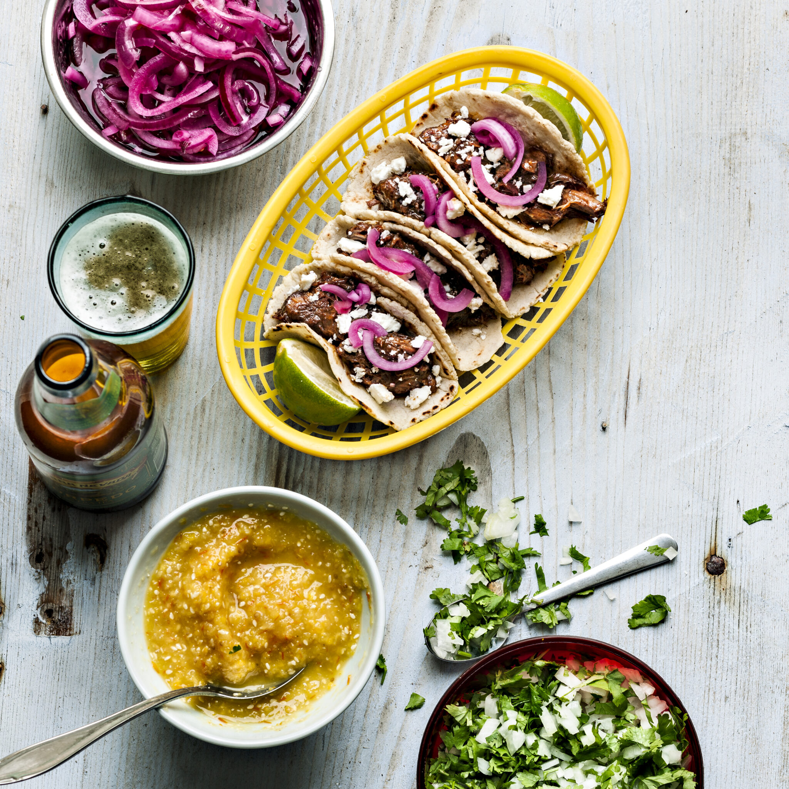

Beef Chili Taco

Description
Francis X Tolbert var en amerikansk chiliälskare som vigde sitt liv åt att hitta det perfekta chilireceptet. Det här är vad han kom fram till: ingen tomat, inga bönor och en massa chili.
Ingredients
- 1 torkad chipotlechili
- 1-2 torkade chilis
- 1-2 dl vatten
- ca 1 kg högrev
- 1 hel vitlök
- matolja
- 2-3 msk vetemjöl
- 1 msk chilipulver
- 2 tsk spiskummin
- 2 tsk torkad oregano
- 2 tsk torkad koriander
- 1 msk strösocker
- salt och svartpeppar
- 1-2 färska chilis
- 33 cl ljust öl
- 1 oxbuljongtärning
Steps
- Ta bort skaften och kärna ur den torkade chilin. Täck dem med vatten och koka ca 15 min. Tärna högreven och finhacka vitlöken, stek sedan kött och vitlök i lite olja.
- Pudra över mjöl, chilipulver, de andra kryddorna, socker, salt och peppar. Finhacka och tillsätt den färska chilin. Rör om. Blixtmixa den kokta, torkade chilin med vattnet och häll över grytan. Fyll på med öl och buljong så det precis täcker.
- Låt stå och puttra med lock minst 2h.